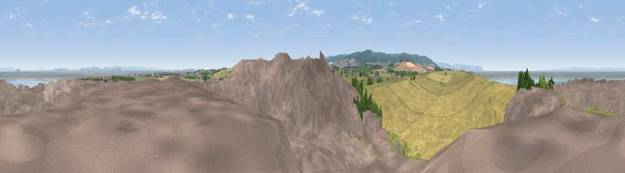

Viewpoint near Stogursey
#7821 in England · top 32% of its area beats it · near Stogursey · path 142 mWhere it is
The exact computed spot (ST 19875 45325). Click the marker for map links.
Public access: the nearest public right of way is about 142 m away — the final stretch may cross private land. Computed from Natural England's CRoW access layer and OpenStreetMap rights of way — not the legal definitive map. Always verify locally.
The view, rendered

A 360° render of this exact spot computed from the terrain model, tree cover and land cover — summer colours, afternoon light, calibrated against photographs of famous viewpoints. Real trees, hedges and buildings will differ in detail.
The panorama
Grey silhouette: terrain skyline in each direction (720 bearings, Earth curvature and refraction included). Dashed green: skyline with trees (+15 m) and buildings (+8 m) as obstacles. Blue strip: how far the ground is visible on each bearing.
Where the view opens
Wedge length = distance to the farthest visible ground on that bearing (vegetation-aware). Rings at 10, 25 and 50 km.
What fills the view
36% built-up · 34% cropland · 15% grassland · 9% water · 5% woodland ·
Angular shares of the visible panorama (visual magnitude), not map area. Landscape diversity 0.63 (0–1 Shannon).
Key numbers
More beautiful places nearby
The staircase of upgrades: each row has a higher view potential than everything closer. Driving times are estimates from straight-line distance, calibrated against real road routing — check an actual route before setting out.
| Place | Direction | Drive | Score |
|---|---|---|---|
| Viewpoint near Stogursey | SE · 2 km | ~6 min | 67.5 |
| Viewpoint near Kilve | WSW · 4 km | ~10 min | 78.7 |
| Viewpoint near Holford | SW · 7 km | ~14 min | 80.8 |
| Viewpoint near Holford | SSW · 7 km | ~15 min | 82.2 |
| Viewpoint near East Quantoxhead | WSW · 7 km | ~15 min | 83.1 |
| Viewpoint near Holford | SW · 7 km | ~15 min | 85.9 |
| Viewpoint near West Quantoxhead | WSW · 8 km | ~16 min | 87.9 |
| Viewpoint near West Quantoxhead | WSW · 9 km | ~17 min | 88.7 |
51.20150, -3.14821 · source: screening · position refined by local search. Computed location — check access rights before visiting.